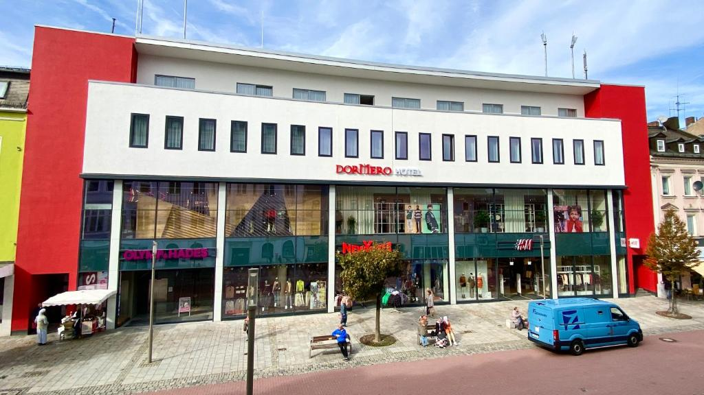

Kontaktdaten/Impressum
- Kreuzsteinstraße 10
- 95028 Hof
- Telefon: +49 30 202 13 375
- Mail: info@dormero.de
Positve Eigenschaften
- Zentrale Lage, ideal für Stadtbesichtigungen.
- Modern und stilvoll eingerichtete Zimmer.
- Freundliches und hilfsbereites Personal.
Negative Eigenschaften
- Minibar nicht vollständig bestückt.
- Begrenzte Parkmöglichkeiten.
- Kleiner Wellnessbereich.
Das Dormero Hotel in Hof ist ein modernes und stilvolles Hotel in der bayerischen Stadt Hof. Es bietet komfortable Zimmer mit zeitgemäßer Ausstattung, darunter kostenfreies WLAN und Flachbildfernseher. Das Hotel verfügt über ein Fitnesscenter, ein Restaurant, eine Bar und Konferenzräume, die sich ideal für Geschäftsreisende und Urlauber eignen. Die zentrale Lage des Hotels ermöglicht einfachen Zugang zu den Sehenswürdigkeiten der Stadt und bietet gleichzeitig eine entspannte Atmosphäre für einen angenehmen Aufenthalt.